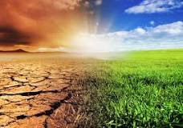
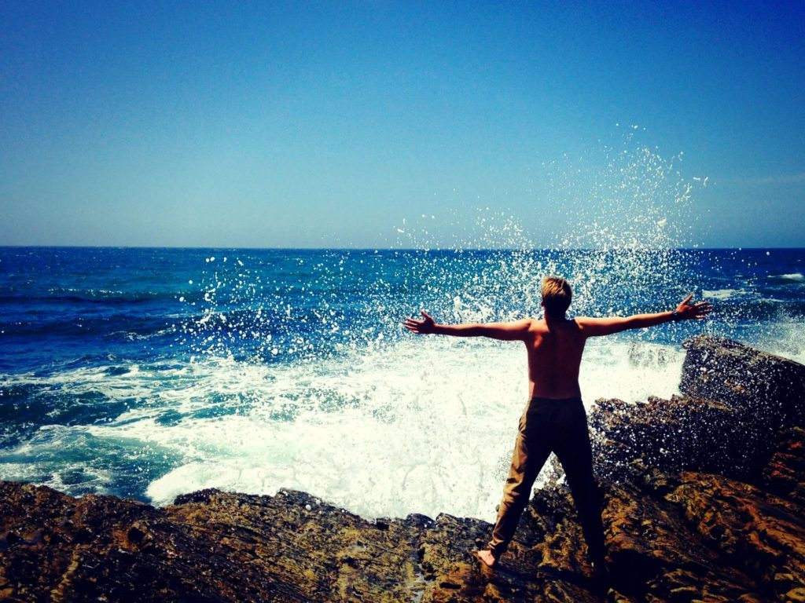

Writer – Michelle Lagos CEO
Donating money can definitely be one effective way to give back but isn’t the only way. Let’s look at ways to give forward and back to our local communities. This can be done well by looking at investing equal time, resources, and energy to those moving forward and also to those pillars that are winding down. Both have equal needs to address.
Here’s 5 Different Ways to Give Forward and Back
Promote Local Businesses
Regardless of what services you provide, one of the best ways to support your community is to help out other businesses in the area. Take a moment each week and try to buy at least one local item from a business that’s owned from a 60+ owner and then another from a youth to 30 yr. old business owner. Yes, make an effort to buy as local as possible.
Here’s another promotion step – Add an area on your website that reviews these local businesses quarterly and add a link to your favorite companies owned by both the younger and the older. Yes, it’s also true that cross-networking with non-competing companies, with similar markets, helps you reach more people while helping out other local professionals and business owners just like you.
Showing up with Volunteerism
Many businesses are now encouraging employees to volunteer locally by offering paid time-off for volunteering or hosting in-house events monthly, quarterly, or yearly. Both avenues boost morale . This is a good time to double-check and see if the business or organization you work for does. If it doesn’t, bringing up the idea would be very good for all. It’s a vital part of the community to show you care; the smallest to the largest businesses and corps. do. When it’s decided, choose organizations that are dedicated to being inclusive to all diversity because that’s the true foundation of all US communities. Many ages, many stages. Assess what the primary needs are locally and also what volunteerism action will be making the strongest impact now and also on the future.
Always consider homelessness
Whether it’s a youth, adult, or senior citizen it was reported nationally that:
552,830 Americans are homeless and suffering tonight
- 1 in every 588 Americans is homeless.
- 194,467 people will sleep on the street across the USA tonight (HUD 2018).
- The ten states with the highest homeless rates account for 55% of the homeless population – OR, CA, NY, FL, TX, WA, MA, PA, IL, CO.
- 18% are chronically homeless (HUD 2018).
- 7% are unaccompanied youth under 25 (HUD 2018).
- 7% are veterans (HUD 2018).

Helping that Climate Change
This seems to be a better time than EVER to grow a garden, plant a tree, and take on One-Day Service Projects that help with hunger, climate change, housing, mobility, clean-air, clean-land, and all-life preservation. Find these organizations that are getting their hands in it and join along. An excellent organization in and around the Portland, Oregon area includes – https://www.handsonportland.org. But maybe again it’s time for a sabbatical, finding projects around the world can be exciting too. https://www.globalvolunteersolutions.orgKeep it simple. Keep it everyday.
If you’re in the grocery line and the person in front of you drops something, pick it up. Sincerely smile. Do you see a homeless person near your lunch spot, buy two. High five that youth for doing the right thing. Give that compliment. Does that dog need water, fill it. Were you going to sell it, give it. Plant a small garden in the yard the bees like. Go trash hiking with friends and fam, and enjoy nature while you’re on the hunt. Start limiting how you purchase without a conscious mind and direct your buying power. Enjoy more of the simple everyday and protect it.
